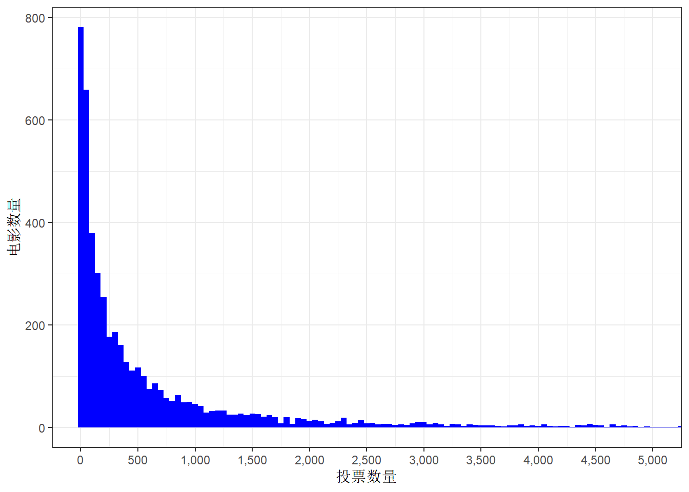
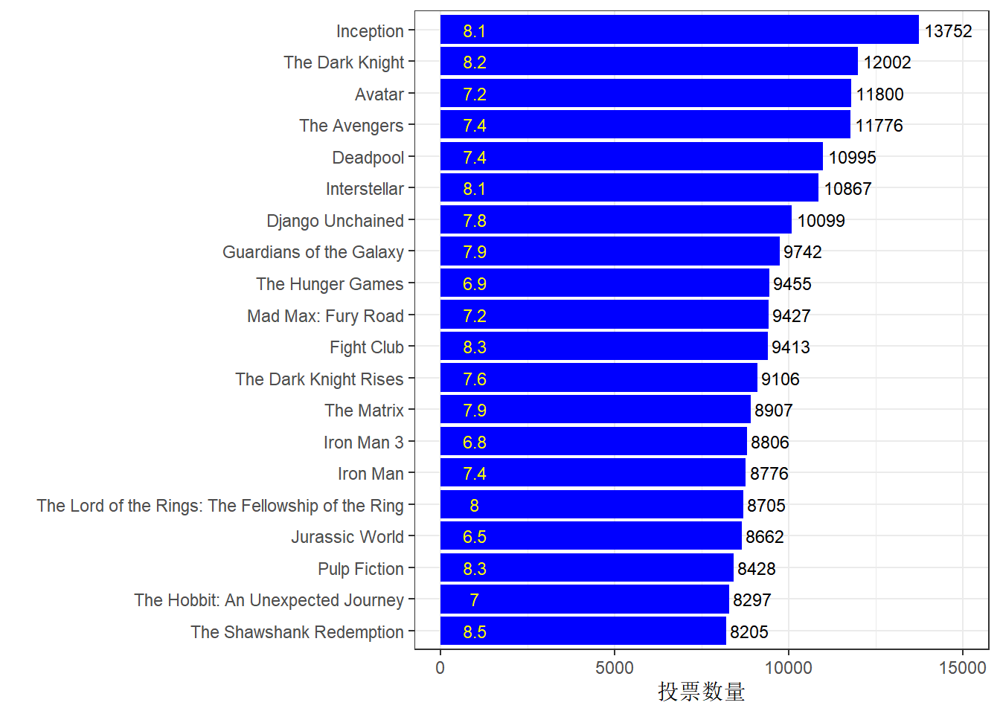
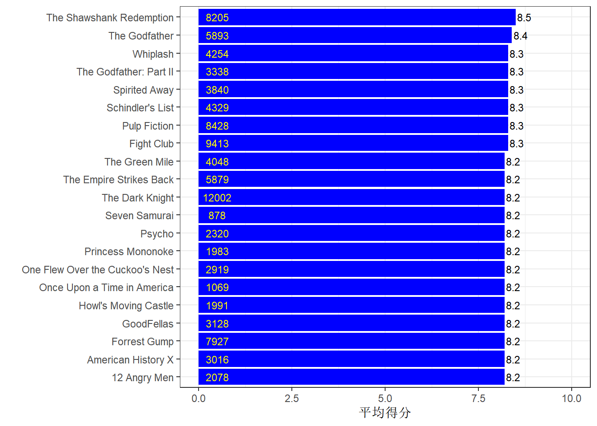
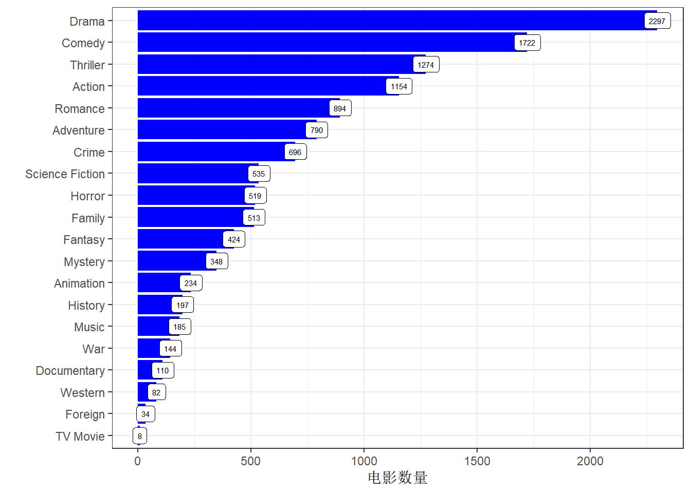
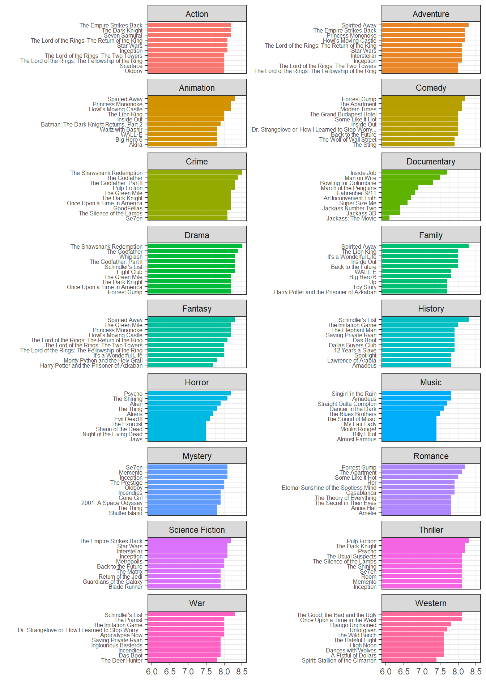
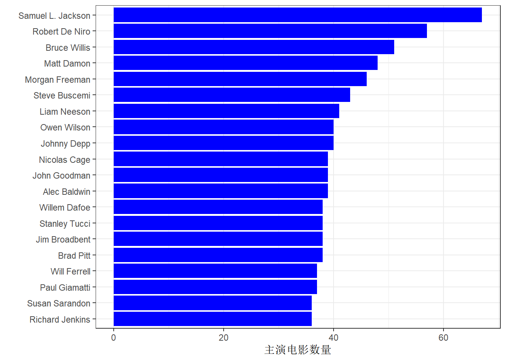
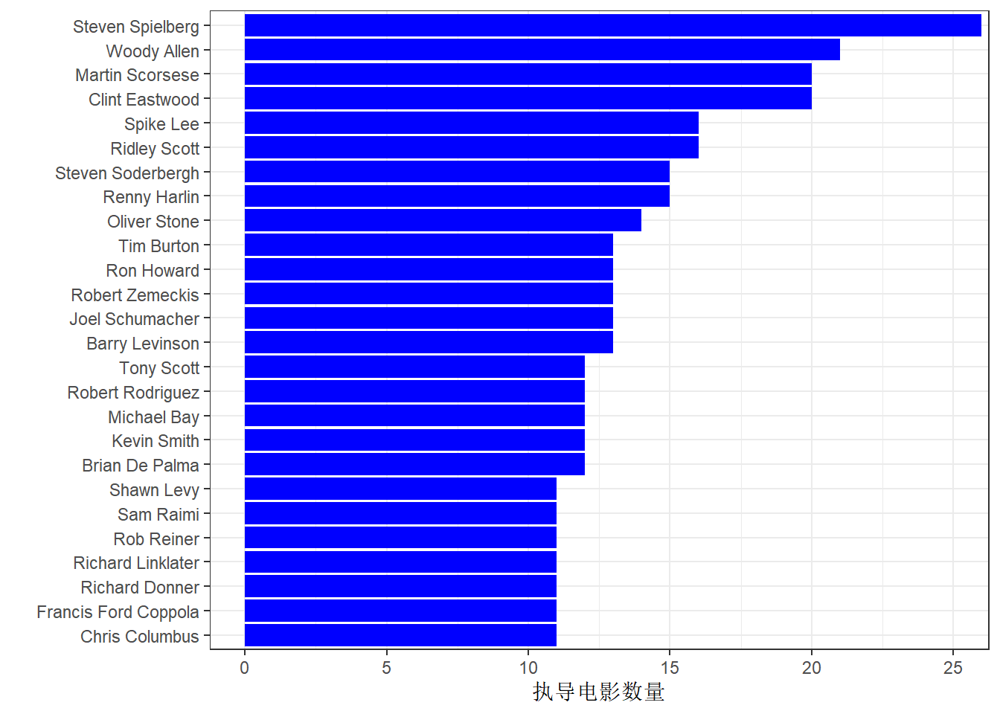
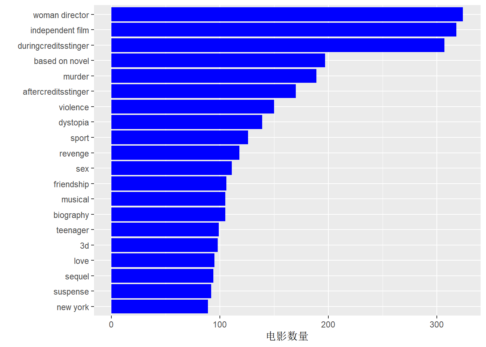
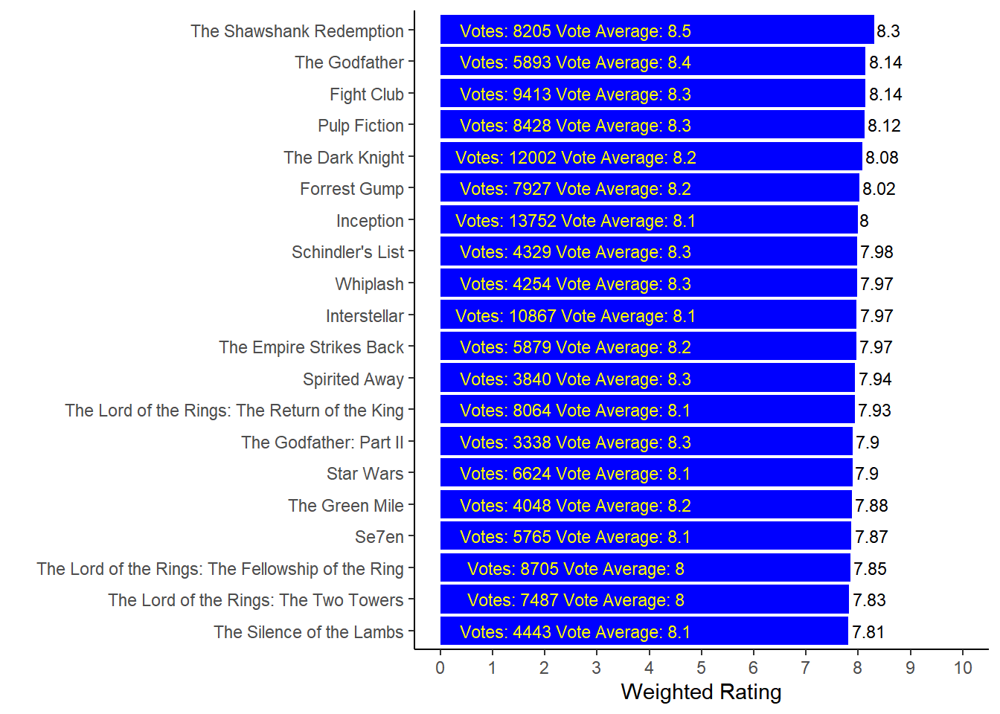

第 8 章 电影
8.1 数据
8.1.1 录入
movies <- read_csv("data/movies/tmdb_5000_movies.csv",
na = "NA", show_col_types = FALSE
)
credits <- read_csv("data/movies/tmdb_5000_credits.csv",
na = "NA",
show_col_types = FALSE
)8.1.2 数据概览
glimpse(movies)## Rows: 4,803
## Columns: 20
## $ budget <dbl> 2.37e+08, 3.00e+08, 2.45e+08, 2.50e+08~
## $ genres <chr> "[{\"id\": 28, \"name\": \"Action\"}, ~
## $ homepage <chr> "http://www.avatarmovie.com/", "http:/~
## $ id <dbl> 19995, 285, 206647, 49026, 49529, 559,~
## $ keywords <chr> "[{\"id\": 1463, \"name\": \"culture c~
## $ original_language <chr> "en", "en", "en", "en", "en", "en", "e~
## $ original_title <chr> "Avatar", "Pirates of the Caribbean: A~
## $ overview <chr> "In the 22nd century, a paraplegic Mar~
## $ popularity <dbl> 150.43758, 139.08262, 107.37679, 112.3~
## $ production_companies <chr> "[{\"name\": \"Ingenious Film Partners~
## $ production_countries <chr> "[{\"iso_3166_1\": \"US\", \"name\": \~
## $ release_date <date> 2009-12-10, 2007-05-19, 2015-10-26, 2~
## $ revenue <dbl> 2787965087, 961000000, 880674609, 1084~
## $ runtime <dbl> 162, 169, 148, 165, 132, 139, 100, 141~
## $ spoken_languages <chr> "[{\"iso_639_1\": \"en\", \"name\": \"~
## $ status <chr> "Released", "Released", "Released", "R~
## $ tagline <chr> "Enter the World of Pandora.", "At the~
## $ title <chr> "Avatar", "Pirates of the Caribbean: A~
## $ vote_average <dbl> 7.2, 6.9, 6.3, 7.6, 6.1, 5.9, 7.4, 7.3~
## $ vote_count <dbl> 11800, 4500, 4466, 9106, 2124, 3576, 3~注意到有5列都是以JSON格式展现的（genres, keywords, production_companies, production_countries, and spoken_languages）。我们需要对这几列数据进行处理。
keywords <- movies %>%
filter(nchar(keywords) > 2) %>% # 剔除keywords中的空白
mutate(
js = map(keywords, fromJSON)
) %>%
unnest(js, names_repair = "unique") %>%
select(id...4, title, keyword = name) %>%
rename(id = id...4) %>%
mutate_if(is.character, factor)
genres <- movies %>%
filter(nchar(genres) > 2) %>% # 剔除keywords中的空白
mutate(
js = map(genres, fromJSON)
) %>%
unnest(js, names_repair = "unique") %>%
select(id...4, title, keyword = name) %>%
rename(id = id...4) %>%
mutate_if(is.character, factor)8.1.3 筛选电影类型
假设电影的类型是按照重要程度进行排序的，越靠后的类型对该电影的定义价值越低，所以我们需要将与每部电影最相关的类型筛选出来。
我们筛选出排名前3的类型保留，其它类型则剔除掉。
# 使用传统for循环
genres3 <- genres
genres3$order <- 0
genres3$order[1] <- 1
# 将每部电影的类型进行排序
for (i in 1:(nrow(genres3) - 1)) {
# 将每部电影的第一行设置为1
if (genres3$id[i + 1] != genres3$id[i]) { # 此条件表示为新电影
genres3$order[i + 1] <- 1
# 将每部电影的类型按顺序+1
} else {
genres3$order[i + 1] <- (genres3$order[i]) + 1
}
}genres3 <- genres %>%
group_by(id) %>%
mutate(order = row_number()) %>%
filter(order <= 3) %>%
pivot_wider(
names_from = order,
values_from = keyword
) %>%
rename(genre_1 = `1`, genre_2 = `2`, genre_3 = `3`)
head(genres3, 5)## # A tibble: 5 x 5
## # Groups: id [5]
## id title genre_1 genre_2 genre_3
## <dbl> <fct> <fct> <fct> <fct>
## 1 19995 Avatar Action Advent~ Fantasy
## 2 285 Pirates of the Caribbean: At World'~ Advent~ Fantasy Action
## 3 206647 Spectre Action Advent~ Crime
## 4 49026 The Dark Knight Rises Action Crime Drama
## 5 49529 John Carter Action Advent~ Scienc~movies <- left_join(movies, genres3 %>% select(id, genre_1, genre_2, genre_3), by = "id")8.1.4 演职人员
cast <- credits %>%
filter(nchar(cast) > 2) %>% # 剔除keywords中的空白
mutate(
js = map(cast, fromJSON)
) %>%
unnest(js) %>%
select(-cast, -crew, -credit_id) %>% # 剔除JSON数据
rename(actor = name, movie_cast_id = cast_id, actor_id = id) %>%
mutate_if(is.character, factor)
glimpse(cast)## Rows: 106,257
## Columns: 8
## $ movie_id <dbl> 19995, 19995, 19995, 19995, 19995, 19995, 199~
## $ title <fct> "Avatar", "Avatar", "Avatar", "Avatar", "Avat~
## $ movie_cast_id <int> 242, 3, 25, 4, 5, 8, 7, 9, 11, 10, 12, 13, 32~
## $ character <fct> "Jake Sully", "Neytiri", "Dr. Grace Augustine~
## $ gender <int> 2, 1, 1, 2, 1, 2, 2, 1, 2, 2, 2, 2, 2, 2, 2, ~
## $ actor_id <int> 65731, 8691, 10205, 32747, 17647, 1771, 59231~
## $ actor <fct> "Sam Worthington", "Zoe Saldana", "Sigourney ~
## $ order <int> 0, 1, 2, 3, 4, 5, 6, 7, 8, 9, 10, 11, 12, 13,~cast1 <- cast %>% # 用作之后的可视化
count(actor)由于数据量庞大，我们筛选其中一位演员对此数据进行初步观察处理。原项目选择了小李子，不过我这里选择了一位女性演员，看看寡姐的情况如何。
kable(cast %>%
filter(actor == "Scarlett Johansson"))| movie_id | title | movie_cast_id | character | gender | actor_id | actor | order |
|---|---|---|---|---|---|---|---|
| 99861 | Avengers: Age of Ultron | 10 | Natasha Romanoff / Black Widow | 1 | 1245 | Scarlett Johansson | 4 |
| 24428 | The Avengers | 34 | Natasha Romanoff / Black Widow | 1 | 1245 | Scarlett Johansson | 4 |
| 271110 | Captain America: Civil War | 14 | Natasha Romanoff / Black Widow | 1 | 1245 | Scarlett Johansson | 2 |
| 278927 | The Jungle Book | 2 | Kaa (voice) | 1 | 1245 | Scarlett Johansson | 4 |
| 10138 | Iron Man 2 | 5 | Natalie Rushman / Natasha Romanoff / Black Widow | 1 | 1245 | Scarlett Johansson | 3 |
| 100402 | Captain America: The Winter Soldier | 8 | Natasha Romanoff / Black Widow | 1 | 1245 | Scarlett Johansson | 2 |
| 1635 | The Island | 21 | Jordan Two Delta / Sarah Jordan | 1 | 1245 | Scarlett Johansson | 1 |
| 547 | The Horse Whisperer | 5 | Grace MacLean | 1 | 1245 | Scarlett Johansson | 3 |
| 9676 | The Black Dahlia | 2 | Kay Lake | 1 | 1245 | Scarlett Johansson | 1 |
| 8285 | The Spirit | 1 | Silken Floss | 1 | 1245 | Scarlett Johansson | 1 |
| 74465 | We Bought a Zoo | 5 | Kelly Foster | 1 | 1245 | Scarlett Johansson | 1 |
| 240832 | Lucy | 1 | Lucy Miller | 1 | 1245 | Scarlett Johansson | 0 |
| 10184 | He’s Just Not That Into You | 11 | Anna Marks | 1 | 1245 | Scarlett Johansson | 7 |
| 1124 | The Prestige | 14 | Olivia Wenscombe | 1 | 1245 | Scarlett Johansson | 3 |
| 12184 | The Other Boleyn Girl | 22 | Mary Boleyn | 1 | 1245 | Scarlett Johansson | 1 |
| 11836 | The SpongeBob SquarePants Movie | 17 | Mindy (voice) | 1 | 1245 | Scarlett Johansson | 6 |
| 8869 | Eight Legged Freaks | 15 | Ashley Parker | 1 | 1245 | Scarlett Johansson | 3 |
| 1901 | In Good Company | 3 | Alex Foreman | 1 | 1245 | Scarlett Johansson | 1 |
| 152601 | Her | 10 | Samantha (voice) | 1 | 1245 | Scarlett Johansson | 1 |
| 270487 | Hail, Caesar! | 10 | DeeAnna Moran | 1 | 1245 | Scarlett Johansson | 4 |
| 5038 | Vicky Cristina Barcelona | 3 | Cristina | 1 | 1245 | Scarlett Johansson | 0 |
| 116 | Match Point | 17 | Nola Rice | 1 | 1245 | Scarlett Johansson | 1 |
| 97370 | Under the Skin | 5 | Laura | 1 | 1245 | Scarlett Johansson | 0 |
| 3635 | Girl with a Pearl Earring | 1 | Griet | 1 | 1245 | Scarlett Johansson | 0 |
| 138697 | Don Jon | 9 | Barbara Sugarman | 1 | 1245 | Scarlett Johansson | 1 |
| 1548 | Ghost World | 5 | Rebecca | 1 | 1245 | Scarlett Johansson | 1 |
| 153 | Lost in Translation | 3 | Charlotte | 1 | 1245 | Scarlett Johansson | 1 |
| 512 | Scoop | 4 | Sondra Pransky | 1 | 1245 | Scarlett Johansson | 0 |
order列包括了数字0~4，是否代表了演员在这部电影里的番位？在超体（Lucy）中，寡姐是无可争议的第一番位，我们来验证下。
cast %>%
filter(title == "Lucy") %>%
select(title, order, actor, character) %>%
arrange(order)## # A tibble: 59 x 4
## title order actor character
## <fct> <int> <fct> <fct>
## 1 Lucy 0 Scarlett Johansson Lucy Miller
## 2 Lucy 1 Morgan Freeman Professor Samuel Norman
## 3 Lucy 2 Choi Min-sik Mr. Jang
## 4 Lucy 3 Amr Waked Pierre Del Rio
## 5 Lucy 4 Julian Rhind-Tutt The Limey
## 6 Lucy 5 Pilou Asb<U+00E6>k Richard
## 7 Lucy 6 Analeigh Tipton Caroline
## 8 Lucy 7 Nicolas Phongpheth Jii
## 9 Lucy 8 Jan Oliver Schroeder German Mule
## 10 Lucy 9 Luca Angeletti Italian Mule
## # ... with 49 more rows果然没错。原来超体的演员只有59位，吕克贝松真是赚的盆满钵满。
与genres一样，我们同样选择每部电影中排名前3位的主演作为后续分析的基础数据。
cast <- cast %>%
group_by(movie_id) %>%
mutate(order3 = row_number()) %>%
filter(order3 <= 3) %>%
select(movie_id, title, actor, order3) %>%
pivot_wider(
names_from = order3,
values_from = actor
) %>%
rename(actor_1 = `1`, actor_2 = `2`, actor_3 = `3`)
head(cast, 5)## # A tibble: 5 x 5
## # Groups: movie_id [5]
## movie_id title actor_1 actor_2 actor_3
## <dbl> <fct> <fct> <fct> <fct>
## 1 19995 Avatar Sam Wo~ Zoe Sa~ Sigour~
## 2 285 Pirates of the Caribbean: At Worl~ Johnny~ Orland~ Keira ~
## 3 206647 Spectre Daniel~ Christ~ Léa Se~
## 4 49026 The Dark Knight Rises Christ~ Michae~ Gary O~
## 5 49529 John Carter Taylor~ Lynn C~ Samant~最后，我们将演员数据和最初的电影数据合并。
movies <- left_join(movies,
cast %>%
select(id = movie_id, actor_1, actor_2, actor_3),
by = "id"
)
movies## # A tibble: 4,803 x 26
## budget genres homepage id keywords original_langua~
## <dbl> <chr> <chr> <dbl> <chr> <chr>
## 1 237000000 "[{\"id\": 28~ http://~ 19995 "[{\"id~ en
## 2 300000000 "[{\"id\": 12~ http://~ 285 "[{\"id~ en
## 3 245000000 "[{\"id\": 28~ http://~ 206647 "[{\"id~ en
## 4 250000000 "[{\"id\": 28~ http://~ 49026 "[{\"id~ en
## 5 260000000 "[{\"id\": 28~ http://~ 49529 "[{\"id~ en
## 6 258000000 "[{\"id\": 14~ http://~ 559 "[{\"id~ en
## 7 260000000 "[{\"id\": 16~ http://~ 38757 "[{\"id~ en
## 8 280000000 "[{\"id\": 28~ http://~ 99861 "[{\"id~ en
## 9 250000000 "[{\"id\": 12~ http://~ 767 "[{\"id~ en
## 10 250000000 "[{\"id\": 28~ http://~ 209112 "[{\"id~ en
## # ... with 4,793 more rows, and 20 more variables:
## # original_title <chr>, overview <chr>, popularity <dbl>,
## # production_companies <chr>, production_countries <chr>,
## # release_date <date>, revenue <dbl>, runtime <dbl>,
## # spoken_languages <chr>, status <chr>, tagline <chr>,
## # title <chr>, vote_average <dbl>, vote_count <dbl>,
## # genre_1 <fct>, genre_2 <fct>, genre_3 <fct>, actor_1 <fct>, ...8.1.4.1 将导演加入movies数据
导演是一部电影的灵魂。
crew <- credits %>%
filter(nchar(crew) > 2) %>%
mutate(js = map(crew, fromJSON)) %>%
unnest(js) %>%
select(-cast, -crew, -credit_id) %>%
rename(crew = name, cres_id = id) %>%
mutate_if(is.character, factor)
glimpse(crew)## Rows: 129,581
## Columns: 7
## $ movie_id <dbl> 19995, 19995, 19995, 19995, 19995, 19995, 19995,~
## $ title <fct> "Avatar", "Avatar", "Avatar", "Avatar", "Avatar"~
## $ department <fct> Editing, Art, Sound, Sound, Production, Sound, D~
## $ gender <int> 0, 2, 0, 0, 1, 2, 2, 2, 2, 2, 2, 2, 0, 1, 2, 0, ~
## $ cres_id <int> 1721, 496, 900, 900, 1262, 1729, 2710, 2710, 271~
## $ job <fct> Editor, Production Design, Sound Designer, Super~
## $ crew <fct> "Stephen E. Rivkin", "Rick Carter", "Christopher~我们来看看一个职员在一部电影中具体能做啥。
crew %>%
filter(crew == "Quentin Tarantino")## # A tibble: 32 x 7
## movie_id title department gender cres_id job crew
## <dbl> <fct> <fct> <int> <int> <fct> <fct>
## 1 68718 Django Unchained Directing 2 138 Dire~ Quen~
## 2 68718 Django Unchained Writing 2 138 Writ~ Quen~
## 3 16869 Inglourious Baster~ Directing 2 138 Dire~ Quen~
## 4 16869 Inglourious Baster~ Writing 2 138 Writ~ Quen~
## 5 273248 The Hateful Eight Directing 2 138 Dire~ Quen~
## 6 273248 The Hateful Eight Writing 2 138 Writ~ Quen~
## 7 24 Kill Bill: Vol. 1 Directing 2 138 Dire~ Quen~
## 8 24 Kill Bill: Vol. 1 Writing 2 138 Char~ Quen~
## 9 24 Kill Bill: Vol. 1 Writing 2 138 Writ~ Quen~
## 10 393 Kill Bill: Vol. 2 Directing 2 138 Dire~ Quen~
## # ... with 22 more rows可以看到，昆汀不仅做导演，还做制片、编剧、摄影等，甚至还参演自己的电影。
不过，大家对一部电影的职员最关注的往往是导演，所以，我们需要从职员表中筛选出导演。然而，部分电影拥有多个导演，有些电影甚至没有导演，我们将这些特殊的剔除，只选择有一位导演的电影。
movies1Director <- crew %>%
filter(job == "Director") %>%
group_by(movie_id) %>%
mutate(count = n()) %>%
filter(count == 1)
movies <- left_join(movies,
crew %>%
filter(job == "Director" & movie_id %in%
movies1Director$movie_id) %>%
select(id = movie_id, director = crew),
by = "id"
)
glimpse(movies)## Rows: 4,803
## Columns: 27
## $ budget <dbl> 2.37e+08, 3.00e+08, 2.45e+08, 2.50e+08~
## $ genres <chr> "[{\"id\": 28, \"name\": \"Action\"}, ~
## $ homepage <chr> "http://www.avatarmovie.com/", "http:/~
## $ id <dbl> 19995, 285, 206647, 49026, 49529, 559,~
## $ keywords <chr> "[{\"id\": 1463, \"name\": \"culture c~
## $ original_language <chr> "en", "en", "en", "en", "en", "en", "e~
## $ original_title <chr> "Avatar", "Pirates of the Caribbean: A~
## $ overview <chr> "In the 22nd century, a paraplegic Mar~
## $ popularity <dbl> 150.43758, 139.08262, 107.37679, 112.3~
## $ production_companies <chr> "[{\"name\": \"Ingenious Film Partners~
## $ production_countries <chr> "[{\"iso_3166_1\": \"US\", \"name\": \~
## $ release_date <date> 2009-12-10, 2007-05-19, 2015-10-26, 2~
## $ revenue <dbl> 2787965087, 961000000, 880674609, 1084~
## $ runtime <dbl> 162, 169, 148, 165, 132, 139, 100, 141~
## $ spoken_languages <chr> "[{\"iso_639_1\": \"en\", \"name\": \"~
## $ status <chr> "Released", "Released", "Released", "R~
## $ tagline <chr> "Enter the World of Pandora.", "At the~
## $ title <chr> "Avatar", "Pirates of the Caribbean: A~
## $ vote_average <dbl> 7.2, 6.9, 6.3, 7.6, 6.1, 5.9, 7.4, 7.3~
## $ vote_count <dbl> 11800, 4500, 4466, 9106, 2124, 3576, 3~
## $ genre_1 <fct> Action, Adventure, Action, Action, Act~
## $ genre_2 <fct> Adventure, Fantasy, Adventure, Crime, ~
## $ genre_3 <fct> Fantasy, Action, Crime, Drama, Science~
## $ actor_1 <fct> "Sam Worthington", "Johnny Depp", "Dan~
## $ actor_2 <fct> "Zoe Saldana", "Orlando Bloom", "Chris~
## $ actor_3 <fct> "Sigourney Weaver", "Keira Knightley",~
## $ director <fct> "James Cameron", "Gore Verbinski", "Sa~movies <- movies %>%
select(
-genres, -keywords, -production_companies,
-production_countries, -spoken_languages
)8.2 数据探索
8.2.1 投票数量
range(movies$vote_count)## [1] 0 13752ggplot(movies, aes(x = vote_count)) +
# 投票数超过10000的几乎在图中显示不出，我们只关注5000以下的。
geom_histogram(fill = "blue", binwidth = 50) +
theme_bw() +
scale_x_continuous(
breaks = seq(0, 5000, by = 500),
label = comma
) +
coord_cartesian(xlim = c(0, 5000)) +
labs(x = "投票数量", y = "电影数量")
那么投票数量多的电影和它的评分是否关联呢？
movies %>%
top_n(20, wt = vote_count) %>%
ggplot(aes(x = reorder(title, vote_count), y = vote_count)) +
geom_bar(stat = "identity", fill = "blue") +
theme_bw() +
coord_flip(y = c(0, 15000)) +
labs(x = "", y = "投票数量") +
geom_text(aes(label = vote_count), hjust = -0.1, size = 3) +
geom_text(aes(label = vote_average),
y = 1000,
color = "yellow", size = 3
)
可以看到，投票多的电影，评分通常也不低。在投票最多的前20位电影中，最低分为6.5。
8.2.2 评分
评分最高的20部电影都有哪些？虽然已经耳熟能详，还是在图形上看看吧~
有些极端的评分是由于投票数量过少导致的，就如同体育比赛中通常会去掉一个最高分和一个最低分，我们也需要做同样的处理以达到最真实的效果。 我们选择利用投票数对这部分内容进行筛选。
movies %>%
filter(vote_count > 250) %>%
top_n(20, wt = vote_average) %>%
ggplot(aes(x = reorder(title, vote_average), y = vote_average)) +
geom_bar(stat = "identity", fill = "blue") +
theme_bw() +
coord_flip(y = c(0, 10)) +
labs(x = "", y = "平均得分") +
geom_text(aes(label = vote_average), hjust = -0.1, size = 3) +
geom_text(aes(label = vote_count),
y = 0.5,
color = "yellow", size = 3
)
我们熟悉的电影，肖申克的救赎、教父、爆裂鼓手等悉数上榜。
多数电影与我们年代都比较久远了，令人感叹。
8.3 电影类型
8.3.1 电影类型的数量
genres %>%
group_by(keyword) %>%
count() %>%
ggplot(aes(x = reorder(keyword, n), y = n)) +
geom_bar(stat = "identity", fill = "blue") +
geom_label(aes(label = n), size = 2) +
coord_flip() +
theme_bw() +
labs(x = "", y = "电影数量")
8.3.2 不同类型电影的评分
genres250 <- left_join(genres,
movies %>%
filter(vote_count > 250) %>%
select(
id, vote_average, vote_count,
original_language, original_title
),
by = "id"
)
genres250 <- genres250 %>%
filter(!is.na(genres250$vote_average))
genres250$title <- str_trunc(as.character(genres250$title),
width = 50, side = "right"
)
genres250$title <- as.factor(genres250$title)
genres250 %>%
filter(!keyword %in% c("Foreign", "TV Movie")) %>%
group_by(keyword) %>%
arrange(desc(vote_average)) %>%
slice(1:10) %>%
ggplot(aes(x = reorder(title, vote_average), y = vote_average)) +
geom_col(aes(fill = keyword), show.legend = FALSE) +
coord_flip(y = c(6, 8.5)) +
facet_wrap(~keyword, scales = "free_y", ncol = 2) +
labs(x = "", y = "") +
theme_bw() +
theme(axis.text.y = element_text(size = 6))
8.4 最受欢迎的演员和导演
8.4.1
cast1 %>%
top_n(20, wt = n) %>%
ggplot(aes(x = reorder(actor, n), y = n)) +
geom_col(fill = "blue") +
theme_bw() +
coord_flip() +
labs(x = "", y = "主演电影数量")
让我非常惊讶的是，“mother f**ker 侠”高居主演电影数量的第一位。
名单上的演员都是耳熟能详的了。
8.4.2 指导最多电影的导演
movies %>%
filter(!is.na(movies$director)) %>%
count(director) %>% # 等价于group_by(director) %>% count()
top_n(20, wt = n) %>%
ggplot(aes(x = reorder(director, n), y = n)) +
geom_col(fill = "blue") +
coord_flip(y = c(0, 25)) +
theme_bw() +
labs(x = "", y = "执导电影数量") 斯皮尔伯格指导电影的数量遥遥领先。
8.5 keywords
8.5.1 使用最多的关键词
keywords %>%
count(keyword) %>%
top_n(20, wt = n) %>%
ggplot(aes(x = reorder(keyword, n), y = n)) +
geom_col(fill = "blue") +
coord_flip() +
labs(x = "", y = "电影数量")
set.seed(2019)
keywords_counts <- keywords %>% count(keyword)
par(mfrow = c(1, 1), bg = "grey97")
wordcloud(keywords_counts$keyword, keywords_counts$n,
max.words = 100, scale = c(2.0, .5),
random.color = TRUE, random.order = FALSE,
rot.per = 0, colors = brewer.pal(9, "Set1")
)8.6 电影推荐
使用IMDB的电影权重计算公式来对电影进行推荐。
\[ \begin{align} W = \frac{R×v + C×m}{v + m} \tag{8.1} \end{align} \] 式中：
W为权重评级
R为电影的平均评分（vote_average）
v为总投票数（vote_count）
m为进入Top250电影所需的最低投票数
C为所有电影的评分的平均
我们先对参数C和m进行计算，今儿计算W
C <- mean(movies$vote_average)
m <- quantile(movies$vote_count, 0.75)
movies$weighted_rating <-
(movies$vote_average * movies$vote_count + C * m) /
(movies$vote_count + m)movies %>%
top_n(20, wt = weighted_rating) %>%
ggplot(aes(
x = reorder(title, weighted_rating),
y = weighted_rating
)) +
geom_bar(stat = "identity", fill = "blue") +
theme_classic() +
coord_flip(y = c(0, 10)) +
labs(x = "", y = "Weighted Rating") +
geom_text(aes(label = round(weighted_rating, 2)),
hjust = -0.1, size = 3
) +
scale_y_continuous(breaks = seq(0, 10, by = 1)) +
geom_text(aes(label = paste(
"Votes:", vote_count,
"Vote Average:", vote_average
)),
y = 2.6, size = 3, col = "yellow"
)
8.6.1 基于类型和语言的简单推荐
genres250 <- left_join(genres250,
movies %>%
select(id, weighted_rating),
by = "id"
)
# 建立推荐函数
recommendGenreLanguage <- function(Genre, Language = "en") {
genres250 %>%
filter(original_language == Language & keyword == Genre) %>%
arrange(desc(weighted_rating)) %>%
slice(1:5) %>%
select(id, title, original_title, original_language, vote_count, vote_average, weighted_rating)
}我们看一下推荐的top5 Drama电影。
recommendGenreLanguage("Drama")## # A tibble: 5 x 7
## id title original_title original_langua~ vote_count vote_average
## <dbl> <fct> <chr> <chr> <dbl> <dbl>
## 1 278 The ~ The Shawshank~ en 8205 8.5
## 2 238 The ~ The Godfather en 5893 8.4
## 3 550 Figh~ Fight Club en 9413 8.3
## 4 155 The ~ The Dark Knig~ en 12002 8.2
## 5 13 Forr~ Forrest Gump en 7927 8.2
## # ... with 1 more variable: weighted_rating <dbl>我们在recommendGernreLanguage()函数中加入了language参数，意味着我们可以根据语言对推荐电影进行选择。
recommendGenreLanguage("Drama", "es")## # A tibble: 5 x 7
## id title original_title original_langua~ vote_count vote_average
## <dbl> <fct> <chr> <chr> <dbl> <dbl>
## 1 1417 Pan'~ El laberinto ~ es 3041 7.6
## 2 25376 The ~ El secreto de~ es 626 7.8
## 3 55 Amor~ Amores perros es 521 7.6
## 4 6537 The ~ El orfanato es 633 7.1
## 5 219 Volv~ Volver es 406 7.3
## # ... with 1 more variable: weighted_rating <dbl>8.6.2 基于电影内容的推荐（演员、导演、类型）
编写了一个函数，为一部电影推荐5部类似的电影。根据以下几点对所有其他电影进行排序：
相似性的数量（相同的导演，相同的演员，相同的类型）。
当许多电影的相似性数量相同时，根据降序加权评级对它们进行排序。
similarity_vars <- c(
"actor_1", "actor_2", "actor_3",
"director",
"genre_1", "genre_2", "genre_3"
)
movies_filter <- movies %>%
select(id, title, !!similarity_vars) %>%
mutate_if(is.factor, as.character)
recommend_similar <- function(movie) {
director <- movies_filter$director[movies_filter$id == movie]
actor1 <- movies_filter$actor_1[movies_filter$id == movie]
actor2 <- movies_filter$actor_2[movies_filter$id == movie]
actor3 <- movies_filter$actor_3[movies_filter$id == movie]
genre1 <- movies_filter$genre_1[movies_filter$id == movie]
genre2 <- movies_filter$genre_2[movies_filter$id == movie]
genre3 <- movies_filter$genre_3[movies_filter$id == movie]
rec_df <- movies_filter
rec_df$same_director <- NA
rec_df$same_a1 <- NA
rec_df$same_a2 <- NA
rec_df$same_a3 <- NA
rec_df$same_g1 <- NA
rec_df$same_g2 <- NA
rec_df$same_g3 <- NA
rec_df$same_director <- ifelse(rec_df$director == director, 1, 0)
rec_df$same_a1 <- ifelse(rec_df$actor_1 == actor1 | rec_df$actor_2 == actor1 | rec_df$actor_3 == actor1, 1, 0)
rec_df$same_a2 <- ifelse(rec_df$actor_1 == actor2 | rec_df$actor_2 == actor2 | rec_df$actor_3 == actor2, 1, 0)
rec_df$same_a3 <- ifelse(rec_df$actor_1 == actor3 | rec_df$actor_2 == actor3 | rec_df$actor_3 == actor3, 1, 0)
rec_df$same_g1 <- ifelse(rec_df$genre_1 == genre1 | rec_df$genre_2 == genre1 | rec_df$genre_3 == genre1, 1, 0)
rec_df$same_g2 <- ifelse(rec_df$genre_1 == genre2 | rec_df$genre_2 == genre2 | rec_df$genre_3 == genre2, 1, 0)
rec_df$same_g3 <- ifelse(rec_df$genre_1 == genre3 | rec_df$genre_2 == genre3 | rec_df$genre_3 == genre3, 1, 0)
rec_df <- rec_df %>% mutate_at(vars("same_director":"same_g3"), list(~ replace(., is.na(.), 0)))
rec_df$sim_count <- rowSums(rec_df[, 10:16])
rec_df <- left_join(rec_df, movies %>% select(id, weighted_rating), by = "id")
Top5_rec <- rec_df %>%
arrange(desc(sim_count), desc(weighted_rating)) %>%
slice(1:6) %>%
select(id, title, sim_count, weighted_rating, everything())
kable(Top5_rec) %>%
kable_styling(full_width = TRUE)
}
recommend_similar(597)| id | title | sim_count | weighted_rating | actor_1 | actor_2 | actor_3 | director | genre_1 | genre_2 | genre_3 | same_director | same_a1 | same_a2 | same_a3 | same_g1 | same_g2 | same_g3 |
|---|---|---|---|---|---|---|---|---|---|---|---|---|---|---|---|---|---|
| 597 | Titanic | 7 | 7.374977 | Kate Winslet | Leonardo DiCaprio | Frances Fisher | James Cameron | Drama | Romance | Thriller | 1 | 1 | 1 | 1 | 1 | 1 | 1 |
| 4148 | Revolutionary Road | 4 | 6.407782 | Leonardo DiCaprio | Kate Winslet | Michael Shannon | Sam Mendes | Drama | Romance | NA | 0 | 1 | 1 | 0 | 1 | 1 | 0 |
| 1422 | The Departed | 3 | 7.637516 | Leonardo DiCaprio | Matt Damon | Jack Nicholson | Martin Scorsese | Drama | Thriller | Crime | 0 | 0 | 1 | 0 | 1 | 0 | 1 |
| 11324 | Shutter Island | 3 | 7.622046 | Leonardo DiCaprio | Mark Ruffalo | Ben Kingsley | Martin Scorsese | Drama | Thriller | Mystery | 0 | 0 | 1 | 0 | 1 | 0 | 1 |
| 38 | Eternal Sunshine of the Spotless Mind | 3 | 7.596430 | Jim Carrey | Kate Winslet | Kirsten Dunst | Michel Gondry | Science Fiction | Drama | Romance | 0 | 1 | 0 | 0 | 1 | 1 | 0 |
| 64682 | The Great Gatsby | 3 | 7.102448 | Leonardo DiCaprio | Tobey Maguire | Carey Mulligan | Baz Luhrmann | Drama | Romance | NA | 0 | 0 | 1 | 0 | 1 | 1 | 0 |